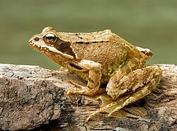

Rana es un género de anfibios anuros de la familia Ranidae que habitan en Eurasia templada hasta Indochina.[1] Las especies de este género se caracterizan por sus cinturas delgadas y la piel rugosa; muchas poseen finas estrías que recorren la espalda, aunque sin las verrugas típicas de los sapos. Son excelentes saltadoras debido a sus largas y delgadas patas traseras. La membrana interdigital típica de sus pies posteriores les permite una natación fácil. Suelen ser de color verde o marrón con manchas negras y amarillentas por el dorso y más pálidas por el vientre.